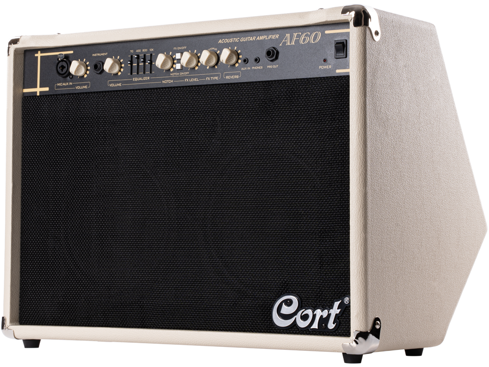
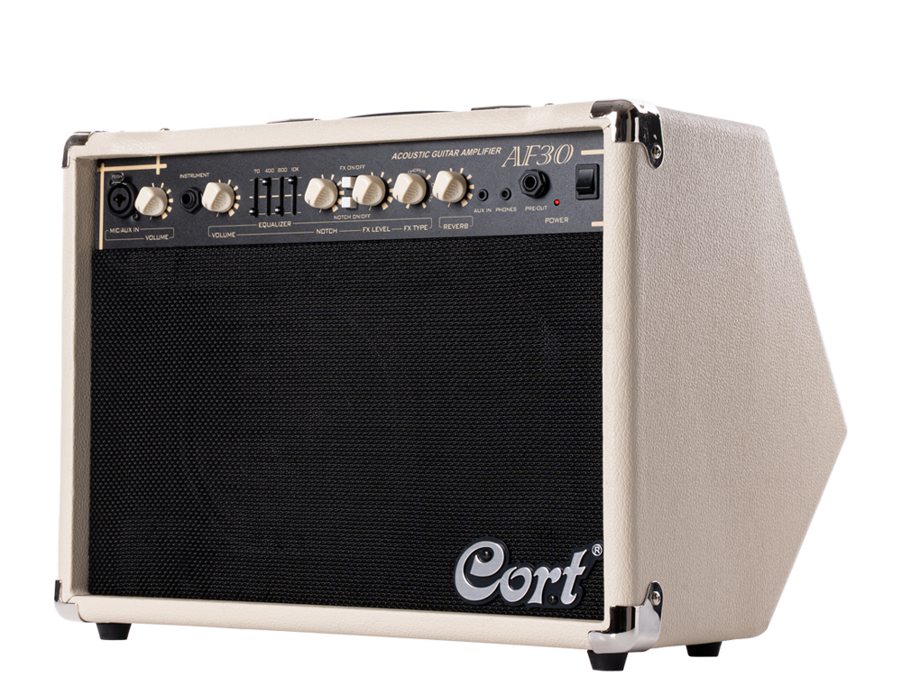

Серія AF
Серія AF – це комбопідсилювачі для електроакустичних гітар, що
відтворюють все багатство та натуральність звучання акустичних інструментів. Моделі AF30 та AF60 є ще
одним доказом різнобічної роботи розробників компанії Cort.

Натисніть і утримуйте для збільшення
Cort-AF60
| Вхідна напруга: | Varies Depending on the Region |
| Необхідна потужність: | 120W |
| Вихідна потужність: | 30W x 2 R.M.S. |
| Опір: | 4Ohm |
| Динамік: | Two 8" Woofer and one tweeter |
| Розміри: | 475x320x305 |
| Вага: | 12kg |
| Еквалайзер: | 4-band equalizer + notch filter |
| Ефекти: | DSP effects: delay, chorus, reverb |
| Аналогові виходи: | Pre-Out output, headphone output |
| Забарвлення: | White |
Ціна: 8 415 грн

Натисніть і утримуйте для збільшення
Cort-AF30
| Вхідна напруга: | Varies Depending on the Region |
| Необхідна потужність: | 30W R.M.S. |
| Вихідна потужність: | 30W R.M.S. |
| Динамік: | One 8" Woofer and one tweeter |
| Розміри: | 392x320x305 |
| Вага: | 8kg |
| Еквалайзер: | 4-band equalizer + notch filter |
| Ефекти: | DSP effects: delay, chorus, reverb |
| Аналогові виходи : | Pre-Out output, headphone output |
| Забарвлення: | White |
Ціна: 6 765 грн